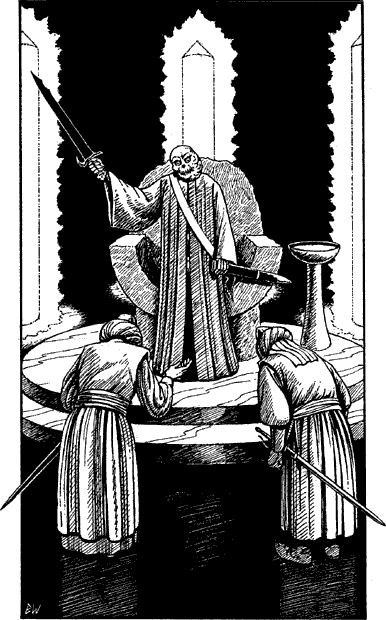

216
On a throne of hewn granite, ringed by seven pillars of fire, sits a being whose form radiates pure evil. A loose grey robe shrouds his skeletal frame. It is drawn closely about a stringy throat that swells and shrinks repulsively as he sucks the sulphurous air. With a claw-like finger, he scrapes nervously at the blistered flesh that is stretched tightly across the swollen left side of his face, attempting in vain to hook the head of a snake-like parasite that has burrowed into his jaw. His eyes, deep-sunken and red-rimmed with the unbearable pain of his affliction, burn with sick fanaticism as he listens impatiently to the pleas and excuses being offered by two who stand before him—the man in red and one other, both humbly bowed.
The luckless mortals plead their case, speaking in the Vassagonian tongue—a language that you mastered long ago. They speak of delays in the construction of a mighty battleship, of shortages of material and of too little time in which to finish their work. Their words anger the seated one. He curses them, and the floor shudders beneath the weight of his unnatural voice. ‘You would dare defy me?’ he roars. ‘You would court the anger of Kraagenskûl, Lord of Argazad? Fools! Know you this. If your work is not completed before the next moon, you shall wish yourselves truly dead. A thousand years of agony shall be the reward for your failure, a thousand years of undeath in the dungeons of Helgedad!’

Fired by his own rage, the corpse-like Darklord Kraagenskûl rises from his throne and draws the sword that hangs sheathed at his side. The blade is unlike any that you have seen. It is wholly black, a black so dense that it appears entirely separate from the hilt, like a tear through which you glimpse the nightmare depths of space. He levels the sword at the cowering men to reinforce his threat, but the blade rebels. It twists in his hand and points accusingly at the place where you are hiding. The Darklord narrows his feral eyes and a wave of psychic shock buffets your mind.
If you possess the Magnakai Discipline of Psi-screen, turn to 21.
If you do not possess this skill, turn to 267.